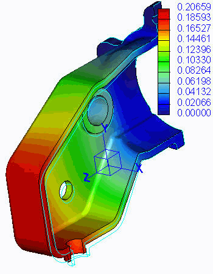

练习: 导出结果
目标
成功完成此练习后，您将能够：
- 使用 Simulate 结果数据生成不同类型的后处理图。
假定背景
使用后处理工具通过 Creo Simulate 生成的数据生成不同类型的图。
“关闭窗口”(Close Window) “拭除未显示的”(Erase Not Displayed)
“拭除未显示的”(Erase Not Displayed) 
 Simulate_Analysis\ExportResults
Simulate_Analysis\ExportResults
-
任务 1. 创建并编辑应力和变形的条纹图。
1. 在功能区中，选择“主页”(Home) 选项卡。
2. 在“实用工具”(Utilities) 组中单击“结果”(Results) 。“Creo Simulate 结果”(Creo Simulate Results) 窗口随即出现。
3. 单击“插入”(Insert) > “结果窗口”(Result Window) 来创建第一个结果窗口。“结果窗口的设计研究”随即出现。
4. 选择 Gearbox 输出文件夹，然后单击“打开”(Open)。将出现“结果窗口定义”(Result Window Definition) 对话框。
5. 自定义如下所示的内容：
- 在“名称”(Name) 字段中键入 MP_STRESS。
- 在“标题”(Title) 字段中键入 Gearbox Max Principal Stress。
- 选择“数量”(Quantity) 选项卡。从“分量”(Component) 下拉列表中选择“最大主值”(Max Principal)。
- 选择“显示位置”(Display Location) 选项卡。保留默认选项“全部”(All)。
- 选择“显示选项”(Display Options) 选项卡。选择下列选项：
- 连续色调
- 已变形
- 显示元素边
- 动画
- 取消选择“自动启动”(Auto Start)
6. 单击“确定并显示”(OK and Show)。结果窗口随即出现。
7. 单击“播放”(Play)
 开始演示结果。
开始演示结果。

使用“速度滑动”杆可使动画减速或加速。您可以单击“停止”(Stop) ，然后再单击“向前”(Step Forwards) 可一帧接一帧地显示动画。
8. 单击“编辑”(Edit) > “结果窗口”(Result Window)。将出现“结果窗口定义”(Result Window Definition) 对话框。
9. 选择“显示选项”(Display Options) 选项卡。
10. 修改下列字段：
- 取消选择“连续色调”(Continuous Tone)。
- 在“缩放”(Scaling) 字段中键入 20。
- 取消选择“显示元素边”(Show Element Edges)。
- 取消选择“动画”(Animate)。
- 单击“确定并显示”(OK and Show)。更新的结果窗口随即出现。
11. 单击“编辑”(Edit) > “复制”(Copy)。将出现“结果窗口定义”(Result Window Definition) 对话框。
12. 自定义如下所示的内容：
- 在“名称”(Name) 字段中键入 MAX_DISP。
- 在“标题”(Title) 字段中键入 Gearbox Max Displacement Magnitude。
- 选择“数量”(Quantity) 选项卡。从下拉列表中选择“位移”(Displacement)，然后从“分量”(Component) 下拉列表中选择“模”(Magnitude)。
- 选择“显示位置”(Display Location) 选项卡并接受所有的默认值。
- 选择“显示选项”(Display Options) 选项卡。完成以下步骤：
- 选择“连续色调”(Continuous Tone)。
- 选择“已变形”(Deformed)。
- 选择“叠加未变形的”(Overlay Undeformed)。
- 在“缩放”(Scaling) 字段中键入 50。
- 选择“动画”(Animate)。
- 取消选择“自动启动”(Auto Start)。
13. 单击“确定并显示”(OK and Show)。结果窗口随即出现。现在已打开两个结果窗口。
14. 以动画显示该结果。
为了能够以动画显示该结果，您需要在已经打开“动画”的窗口中单击。
15. 单击“显示定义”(Show Definitions) 。“显示结果”(Display Result) 窗口随即出现。
16. 取消选择 MP_STRESS。单击“确定”(OK)。已关闭结果窗口的显示。只有 MAX_DISPL 结果窗口还在显示。
17. 单击“编辑”(Edit) > “结果窗口”(Result Window)。将出现“结果窗口定义”(Result Window Definition) 对话框。
18. 选择“显示选项”(Display Options) 选项卡。
19. 修改下列字段：
- 取消选择“连续色调”(Continuous Tone)。
- 取消选择“已变形”(Deformed)。
20. 单击“确定并显示”(OK and Show)。不要关闭窗口。
-
任务 2. “处理条纹图”结果窗口。
1. 要更改模型在条纹图中的方向，可单击“保存的视图列表”(Saved View List) 。单击“前面”(Front)。
2. 重复单击“顶部”(Top)，然后单击“右侧”(Right)。
3. 通过单击“默认”(Default) 恢复默认方向。
4. 单击“插入”(Insert) > “切割/封闭曲面”(Cutting/Capping Surfs)。“结果曲面定义”(Results Surface Definition) 对话框随即出现。完成下列字段以插入切割曲面：
- 在“类型”(Type) 下拉列表中选择“切割曲面”(Cutting Surface)。
- 从“定义方式”(Define by) 下拉列表中选择 WCS。
- 选择 XZ 平面。
- 在“深度”(Depth) 字段中键入 50，然后选择 %。
5. 单击“确定”(OK)。
6. 在模型中以动画显示结果。请注意，已将沿着薄片曲面的条纹图结果的显示从 XZ 平面上切除了大约 50%。不要停止动画。
7. 选择“编辑”(Edit) > “切割曲面”(Cutting Surf)。“结果曲面定义”(Results Surface Definition) 对话框随即出现。
8. 完成以下字段：
- 选择 YZ 平面。
9. 单击“确定”(OK)。审阅新显示的动画条纹图。
10. 选择“编辑”(Edit) > “删除切割曲面”(Delete Cutting Surf) 以删除 YZ 平面切割曲面。
11. 单击“插入”(Insert) > “切割/封闭曲面”(Cutting/Capping Surfs)。“结果曲面定义”(Results Surface Definition) 对话框随即出现。完成下列字段以插入封闭曲面：
- 在“类型”(Type) 下拉列表中选择“封闭曲面”(Capping Surface)。
- 从“定义方式”(Define by) 下拉列表中选择 WCS。
- 选择 XZ 平面。
- 在“深度”(Depth) 字段中键入 60，然后选择 %。
12. 单击“确定”(OK)。请注意，动画仍处于打开状态，但仅显示模型的 60%。
13. 选择“编辑”(Edit) > “封闭曲面”(Capping Surf)。“结果曲面定义”(Results Surface Definition) 对话框随即出现。
14. 更改这些字段以浏览其他设置。
15. 单击“确定”(OK)。审阅新的显示和动画。
16. 选择“编辑”(Edit) > “删除封闭曲面”(Delete Capping Surf) 来删除封闭曲面。
“切割/封闭曲面”(Cutting/Capping Surface) 功能既可应用于 3-D 零件又可应用于装配的条纹图和矢量图。
17. 单击“显示定义”(Show Definitions) 。“显示结果”(Display Result) 窗口随即出现。
18. 选择 MP_STRESS。取消选择 MAX_DISP。单击“确定”(OK)。仅有 MP_STRESS 结果窗口还在显示。
19. 单击“编辑”(Edit) > “结果窗口”(Result Window)。将出现“结果窗口定义”(Result Window Definition) 对话框。
20. 选择“显示选项”(Display Options) 选项卡。
21. 取消选择“动画”(Animation)。
22. 单击“确定并显示”(OK and Show)。
23. 单击“信息”(Info) > “测量”(Measures)。将出现“测量”(Measures) 对话框。
24. 从“测量名称”(Measure Name) 列表中选择 max_stress_prin。
25. 单击“创建注释”(Create Annotation)。请注意在条纹图中创建的并且引线指向最大值位置的注释。
26. 单击“关闭”(Close)。
您可以旋转、平移、缩放和旋转该模型和注释紧跟的引线。
27. 单击“信息”(Info) > “动态查询”(Dynamic Query)。“查询”(Query) 对话框随即出现。
28. 将光标放置在显示注释引线区域的旁边。值出现在“查询”(Query) 对话框中。使用鼠标按钮，在最大位置区域周围单击几次。请注意，已将该值记录在如图所示的条纹图中。
29. 单击“关闭”(Close)。
30. 单击“信息”(Info) > “清除所有查询标记”(Clear All Query Tags)。“问题”(Question) 对话框随即出现。单击“是”(Yes)。
31. 单击“编辑”(Edit) > “删除注释”(Delete Annotation)。
32. 单击“编辑”(Edit) > “图例值”(Legend Value)。
33. 单击图例中的低于最大数的值。“输入数据”(Enter Data) 对话框随即出现。在字段中键入 150。
34. 单击“确定”(OK)。“问题”(Question) 对话框随即出现。单击“是”(Yes)。已更新条纹图中的图例值和颜色分布。
您绝不可以修改最大和最小图例值。可通过单击“格式”(Format) > “图例”(Legend)，然后取消选择“显示视图最小值/最大值”(Show View Min/Max) 将其关闭。
-
任务 3. 创建并编辑矢量和模型图。
1. 单击“编辑”(Edit) > “复制”(Copy)。将出现“结果窗口定义”(Result Window Definition) 对话框。
2. 自定义如下所示的内容：
- 在“名称”(Name) 字段中键入 MP_VECTOR。
- 在“标题”(Title) 字段中键入 Gearbox Max Principal Stress - Vector Plot。
- 从“显示类型”(Display Type) 下拉列表中选择“矢量”(Vectors)。
- 选择“数量”(Quantity) 选项卡。完成以下步骤：
- 从下拉列表中选择“应力”(Stress)。
- 从“分量”(Component) 下拉列表中选择“最大主值”(Max Principal)。
- 选择“显示位置”(Display Location) 选项卡并接受所有的默认值。
- 选择“显示选项”(Display Options) 选项卡。完成以下步骤：
- 选择“着色的矢量”(Shaded Vectors)。
- 选择“已变形”(Deformed)。
- 选择“叠加未变形的”(Overlay Undeformed)。
- 在“缩放”(Scaling) 字段中键入 20，然后选择 %。
- 选择“动画”(Animate)。
- 取消选择“自动启动”(Auto Start)。
- 在“帧”(Frames) 字段中选择 20。
3. 单击“确定并显示”(OK and Show)。结果窗口随即出现。
4. 单击“显示定义”(Show Definitions) 。“显示结果”(Display Result) 窗口随即出现。
5. 取消选择 MP_STRESS 和 Max_DISP。单击“确定”(OK)。只有 MP_STRESS 结果窗口还在显示。
6. 以动画显示该结果。如图所示，已显示该内容。
7. 单击“格式”(Format) > “结果窗口”(Result Window)。“可见性”(Visibilities) 对话框随即显示。
8. 从“背景颜色”(Background Color) 下拉列表中选择“黑色”(Black)。从“可见性”(Visibilities) 部分选择以下选项：
- “标题”(Title)
- “坐标系”(Coordinate System)
- “图例”(Legend)
- “坐标系三重轴”(Csys Triad)
- “注释”(Annotations)
9. 单击“确定”(OK)。现在结果窗口的背景是黑色的。
10. 单击“格式”(Format) > “图例”(Legend)。“编辑图例”(Edit Legend) 对话框随即出现。
11. 如图所示修改对话框。单击“确定”(OK)。

12. 单击“编辑”(Edit) > “复制”(Copy)。将出现“结果窗口定义”(Result Window Definition) 对话框。
13. 自定义如下所示的内容：
- 在“名称”(Name) 字段中键入 MODEL。
- 在“标题”(Title) 字段中键入 Gearbox Model Plot。
- 从“显示类型”(Display Type) 下拉列表中选择“模型”(Model)。
- 选择“数量”(Quantity) 选项卡。完成以下步骤：
- 从下拉列表中选择“位移”(Displacement)。
- 从“分量”(Component) 下拉列表中选择“模”(Magnitude)。
- 选择“显示位置”(Display Location) 选项卡并接受所有的默认值。
- 选择“显示选项”(Display Options) 选项卡。完成以下步骤：
- 选择“着色曲面”(Shade Surfaces)。
- 选择“已变形”(Deformed)。
- 选择“叠加未变形的”(Overlay Undeformed)。
- 在“缩放”(Scaling) 字段中键入 30，然后选择 %。
- 取消选择“动画”(Animate)。
14. 单击“确定并显示”(OK and Show)。结果窗口随即出现。
15. 单击“格式”(Format) > “结果窗口”(Result Window)。“格式化结果窗口”(Format Result Window) 对话框随即出现。
16. 从“背景颜色”(Background Color) 下拉列表中选择 Creo。
17. 单击“确定”(OK)。
-
任务 4. 创建并编辑图形。
1. 单击“编辑”(Edit) > “复制”(Copy)。将出现“结果窗口定义”(Result Window Definition) 对话框。
2. 自定义如下所示的内容：
- 在“名称”(Name) 字段中键入 MP_GRAPH。
- 在“标题”(Title) 字段中键入 Gearbox Max Principal Stress - Graph Plot。
- 从“显示类型”(Display Type) 下拉列表中选择“图形”(Graph)。
- 选择“数量”(Quantity) 选项卡。完成以下步骤：
- 在“图形纵坐标 (竖直) 轴”(Graph Ordinate (Vertical) Axis) 部分，从下拉列表中选择“应力”(Stress)。
- 从“分量”(Component) 下拉列表中选择“最大主值”(Max Principal)。
- 在“图形横坐标 (水平) 轴”(Graph Abscissa (Horizontal) Axis) 部分，选择“曲线弧长度”(Curve Arc Length)。
- 在“图形位置”(Graph Location) 部分单击“选择参考”(Select Reference)
 。在弹出式窗口中，选择图中显示的曲线。在“选择”(Select) 对话框中单击“确定”(OK)，然后在信息窗口中单击“确定”(OK)。
。在弹出式窗口中，选择图中显示的曲线。在“选择”(Select) 对话框中单击“确定”(OK)，然后在信息窗口中单击“确定”(OK)。
3. 单击“确定并显示”(OK and Show)。结果窗口随即出现。
4. 单击“显示定义”(Show Definitions) 。“显示结果”(Display Result) 窗口随即出现。
5. 取消选择 MODEL 和 MP_VECTOR。单击“确定”(OK)。仅有 MP_GRAPH 结果窗口还在显示。
6. 单击“格式”(Format) > “图形”(Graph)。“图形窗口选项”(Graph Window Options) 对话框随即出现。
7. 选择“Y 轴”(Y Axis) 选项卡。完成以下步骤：
- 在“刻度线”(Tick Marks) 部分的“主”(Major) 字段中键入 3。
8. 单击“确定”(OK)。图中显示已修改的图形。
9. 单击“文件”(File) > “导出”(Export) > Excel。“导出至 Excel”(Export to Excel) 对话框随即出现。
10. 在“名称”(Name) 字段中为文件键入一个名称，然后单击“保存”(Save)。将会生成一个 Excel 文件。
您也可以通过单击“文件”(File) > “导出”(Export) > “图形报告”(Graph Report) 以列表形式导出图形的内容。
11. 单击“显示定义”(Show Definitions) 。“显示结果”(Display Result) 窗口随即出现。
12. 选择所有列出的名称并单击“确定”(OK)。显示所有的结果窗口。
13. 按住 SHIFT 键并单击 MP_STRESS 和 MAX_DISPL 窗口。
14. 单击“文件”(File) > “导出”(Export) > “HTML 报告”(HTML Report)。“HTML 报告”(HTML Report) 对话框随即出现。
15. 完成以下步骤：
- 在“HTML 报告名称”(HTML Report Name) 字段中键入 Gearbox_Investigation。
- 在“浏览器标题”(Browser Title) 字段中键入 Gearbox Test 125AK。
- 在“HTML 报告标题”(HTML Report Title) 字段中键入 New Investigation on the Gearbox Design。
- 从“项”(Item) 列表中选择“简介”(Introduction)。
- 在“内容”(Content) 字段中键入 Please examine the max stress seen in this report. I am concerned that a failure may occur.。
- 浏览至“HTML 报告文件”(HTML Report Files) 字段“目录”中的文件目录。
16. 单击“导出”(Export)。
可通过任何浏览器打开和查看此报告。可通过启用 HTML 编辑的任何工具或文本编辑器对其进行编辑。
-
任务 5. 保存结果窗口和使用模板。
1. 单击“显示定义”(Show Definitions) 。“显示结果”(Display Result) 窗口随即出现。
2. 取消选择除 MP_STRESS 之外的所有列出的名称。单击“确定”(OK)。仅有 MP_STRESS 结果窗口还在显示。
3. 单击“文件”(File) > “另存为”(Save As)。“保存结果窗口”(Save Result Window) 对话框随即出现。
4. 在“名称”(Name) 字段中键入 MP_STRESS_ITERATION，然后从“类型”(Type) 下拉列表中选择 *.rwd。
5. 单击“保存”(Save)。
可通过从“Creo Simulate 结果”(Creo Simulate Results) 窗口中单击“文件”(File) > “打开”(Open) 来打开任何保存为 *.rwd 的结果窗口文件。
6. 单击“文件”(File) > “另存为模板”(Save As Template)。“保存结果模板”(Save Results Template) 对话框随即出现。
7. 单击“选择文件夹”(Select Folder) ，然后在“文件名称”(File name) 字段中键入 STRESS_TEMPLATE。
8. 单击“保存”(Save)。“保存结果模板”(Save Results Template) 对话框随即出现。
9. 从“使用模板存储”(Store With Template) 部分选择以下选项：
- “单位”(Units)
- “图例值”(Legend Values)
- “模型方向”(Model Orientation)
- “变形比例”(Deformed Scale)
10. 单击“确定”(OK)。
11. 单击“插入”(Insert) > “结果窗口来自模板”(Result Window From Template)。
12. 选择 Gearbox。
13. 单击“打开”(Open)。“插入结果窗口来自模板”(Insert Result Window from Template) 对话框随即出现。
14. 在“模板选择”(Template Selection) 部分单击“选择文件夹”(Select Folder) 。“载荷结果窗口”(Load Result Window) 对话框随即出现。
15. 从工作目录中选择 STRESS_TEMPLATE。
16. 单击“打开”(Open)。“插入 > 结果窗口来自模板”(Insert Result Window From Template) 对话框随即出现。
17. 单击“确定并显示”(OK and Show)。新的结果窗口是通过不同的输出目录创建的，并且具有相同的模型方向、单位和图例显示。
18. 单击“文件”(File) > “退出结果”(Exit Results)。“提示”(Prompt) 对话框随即出现。
19. 单击“否”(No)。Creo Simulate 界面当前为活动状态。
练习就此结束。